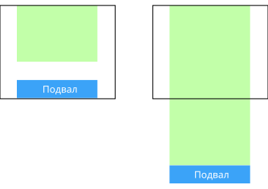

Смысл прижатого подвала заключается в том, что он «прилипает» к нижней части окна браузера. Но не всегда; если на странице достаточно содержимого, чтобы сдвинуть подвал вниз, то это будет сделано. Если содержимого на странице мало, тогда подвал прижмётся к нижней части окна браузера.
Мы используем элемент, например - .wrapper, в который помещаем всё, за исключением подвала. Затем устанавливаем для обёртки отрицательный margin-bottom, равный высоте подвала. В конце обертки добавляем пустой элемент с высотой подвалa - он гарантирует что отрицательный margin не потянет подвал вверх и не перекроет собой содержимое.
<style>
html, body {height:100%; margin:0;}
.wrapper {min-height:100%; margin-bottom:-50px;}
.footer, .push {height: 50px;}
</style>
<div class="wrapper">
<div>Содержимое</div>
<div class="push"></div>
</div>
<footer class="footer">Подвал</footer>Данный метод не требует использования элемента .push, вместо этого нужно обернуть содержимое в дополнительный элемент, к которому следует применить соответствующий padding-bottom. Это делается, опять же, для того, чтобы избежать поднятия подвала над любым содержимым из-за отрицательного margin-top.
Минус данного метода в том, что он требует дополнительный элемент HTML.
<style>
html, body {height:100%; margin:0;}
.content {min-height: 100%;}
.content-inside {padding-bottom: 50px;}
.footer {height: 50px; margin-top: -50px;}
</style>
<div class="content">
<div class="content-inside">Содержимое</div>
</div>
<footer class="footer">Подвал</footer>Один из способов не включать лишние элементы — это отрегулировать высоту обёртки с помощью calc(). Тогда никакого перекрытия не будет, просто два элемента складываются друг с другом на общую высоту 100%.
Обратите внимание на 50px в calc() и фиксированную высоту подвала 50px. Если margin отсутствует, то оба значения должны быть равны, либо нужно будет учесть его значение.
<style>
.content {min-height: calc(100vh - 50px);}
.footer {height: 50px;}
</style>
<div class="content">
<div class="content-inside">Содержимое</div>
</div>
<footer class="footer">Подвал</footer>Большая проблема у перечисленных трёх методов состоит в том, что они требуют подвала фиксированной высоты, а это довольно неприятно. Содержимое может измениться. Элементы гибкие. Фиксированная высота — опасная территория. Использование флексбоксов для прижимания подвала не только не потребует дополнительных элементов, но и позволяет установить подвал произвольной высоты.
<style>
html, body {height: 100%;}
body {
display: flex;
flex-direction: column;
justify-content: space-between;
}
/* .content {flex-shrink: 0;} */
.content {flex: 0 0 auto;}
</style>
<body>
<div class="content">Содержимое</div>
<footer class="footer">Подвал</footer>
</body><style>
html {height: 100%;}
body {
min-height: 100%;
display: grid;
grid-template-rows: 1fr auto;
/* align-items: flex-start; */
}
.content {place-self: start stretch;}
.footer {grid-row: 2/3;}
</style>
<div class="content">Содержимое</div>
<footer class="footer">Подвал</footer>C помощью липкого позиционирования (position:sticky) можно делать приклеенный подвал.
<style>
html, body {height:100%; margin:0;}
footer {height:20px; position:sticky; top:100%;}
</style>
<main>Содержимое</main>
<footer>Подвал</footer>